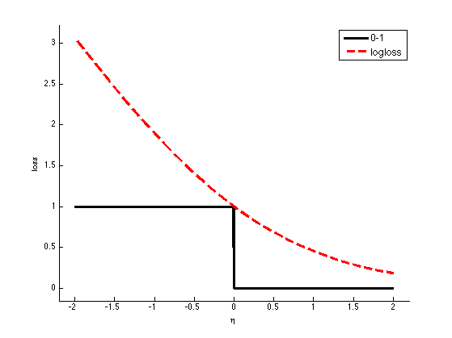
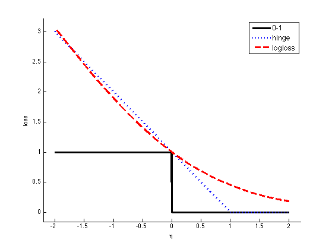
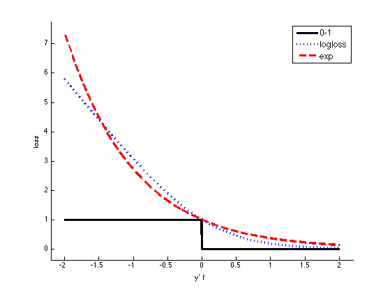

Hinge Loss Plot
z = -2:0.01:2;
L01 = double(sign(z)<0);
Lhinge = max(0,1-z);
Lnll = log2(1+exp(-z));
Lbinom = log2(1+exp(-2*z));
Lexp = exp(-z);
figure; hold on
plot(z, L01, 'k-', 'linewidth', 3);
plot(z, Lnll, 'r--', 'linewidth', 3);
h=legend('0-1','logloss');
set(h,'fontsize', 12)
axis_pct
xlabel('\eta')
ylabel('loss')
printPmtkFigure('nllLoss')
figure; hold on
plot(z, L01, 'k-', 'linewidth', 3);
plot(z, Lhinge, 'b:', 'linewidth', 3);
plot(z, Lnll, 'r--', 'linewidth', 3);
h=legend('0-1','hinge','logloss');
set(h,'fontsize', 12)
axis_pct
xlabel('\eta')
ylabel('loss')
printPmtkFigure('hingeLoss')
figure; hold on
plot(z, L01, 'k-', 'linewidth', 3);
plot(z, Lbinom, 'b:', 'linewidth', 3);
plot(z, Lexp, 'r--', 'linewidth', 3);
h=legend('0-1','logloss','exp');
set(h,'fontsize', 12)
axis_pct
xlabel('y^{-} f')
ylabel('loss')
printPmtkFigure('expLoss')
  